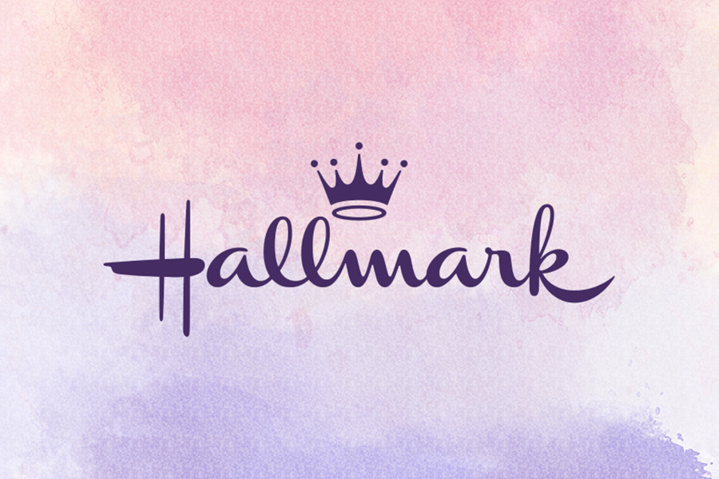
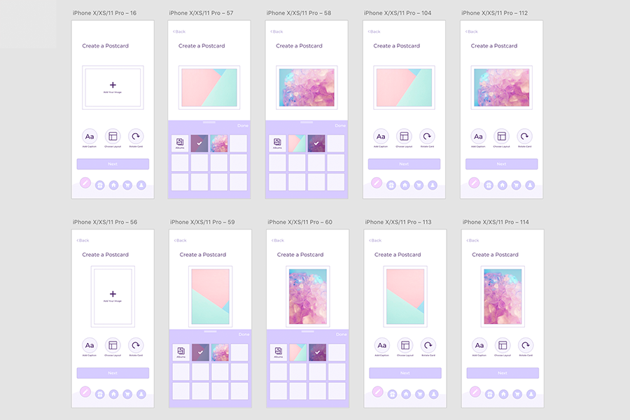
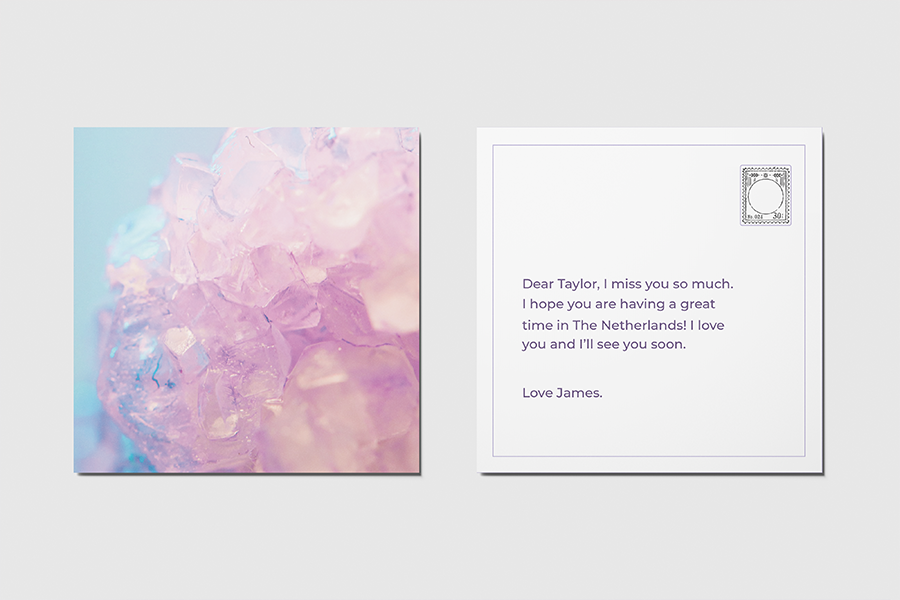

-

Bespoke Design
During my first year of bachelor I had the pleasure of collaborating with the design and marketing team from Hallmark Netherlands. Under the guidance and of our designated tutor, we formed teams of two and ebarked on a bespoke design journey. Together with my peer we designed a personalization tool that includes a digital unwrapping experience.
-

Looking Back
Looking back at my design process I would have to say that it was a long journey with ups and downs. I may have discovered that I am good at some parts of the process like generating new ideas even if they are not necessarily related to each other, but I am not that good at narrowing them down and actually polishing them as well as I would like to. In the future I would seriously need to practice more on my convergent techniques. For me, the most difficult part in the entire process was the interviews with the user and gathering all the necessary data to create the user profile. As I had close to no experience in actually interacting with the users that I have to design for, I found it quite challenging as I was very unsure if I was asking the right questions, and if I was really getting to know my user or if all the data that I was collecting was superficial. But after having the answers to most of my questions, analyzing and clustering the data together was quite easy and a user profile emerged from all the wonderful things I learned about my user. The most important part of the Design thinking process is the user research, without concrete data about who the real users are, no matter what a designer creates on assumptions without real testing or anticipated research, can easily result in a faulty design that will most probably not be useful to the end users.For a successful design an experimental, collaborative and optimistic mindset is required. I tried and succeeded to enter this mindset together with my partner Krissy, we both at one point, when we had to merge all of our ideas together for our final three scenarios, seemed to complete each other’s sentences and we could not stop writing.
Assuming the beginner mindset was not as hard as I first thought, after I cleared my mind of everything I learned so far, I tried not to judge, and I started questioning everything. This helped me in several cases even in the later stages when the digital prototype was done, and I thought I already understood everything. It helped me rethink and simplify certain experiences. During the research phase it helped me find patterns and learn more about my user, I could easily find the right questions for answers I ended up needing desperately. The main insights that I can pinpoint that I have learned from designing for users is that we should always start by listening more to what our users need. Human connection and creating memories together with their loved ones are invaluable gifts and trying to encourage and promote positivity will always be one of my goals. Collaborating with Krissy I learned that there can be multiple perspective to different problems and maybe the answer will be somewhere in the middle. Something that I would do differently now that I look back on how I approached the entire design process, I would have to admit that respecting the chronological path all the design process would have helped me improve the end design. But each time either me or my partner seemed to go off the track, our tutor was making sure we are following the protocol and we would force ourselves to finish everything in time.
Test My Prototype
-

Design Concept
Taylor is a UX design student at THUAS that recently moved to the Netherlands, their family and friends are quite far away from them and Taylor misses them very much. James loves Taylor very much and he wants to send a unique gift that will show how much he treasures their relationship. James knows that he can do that by using the latest app developed by Hallmark, named “Cardfusion”. The app is a personalization tool that will allow James to create a unique postcard for Taylor. While in the personalization tool James can choose the layout of the postcard, colour and orientation as well as the images on the cover and write a personal message on the back. James also has the option to choose from already designed Hallmark postcards if he doesn’t want to create his own. Once the card is created or he selected one of the designs and added a message on the back of the postcard, James will have the option to add an unwrapping experience and an extra gift to the card. The gift that James can add is an intangible gift. James wants to surprise Taylor with a trip to Japan, he wants to use the Hallmark “Cardfusion” tool to make the unwrapping more personal. James will have to record a video of himself, that will be revealed to Taylor once they will scan the QR code on the instructions they will receive alongside their postcard. James is advised not to reveal the gift, but to give a first hint of what the gift might be. On the next step, James will have to choose the person he wants to send the gift to from his contacts. Using the personalization tool, James can create a profile with likes and dislikes for each of his contacts. Based on these profiles, the tool will recommend three digital unwrapping James can choose from. As the gift James wants to send is a trip to Japan, he will have to choose a location. As Taylor loves to be creative, loves surprises and to travel in exciting new places, the most suited digital unwrapping is the Origami Experience. James is informed that Taylor will have to go through an origami puzzle experience and solve a couple of tasks for them to receive the gift from James. After adding a final message where James will tell Taylor why he choose that particular experience, and that it might be linked to a shared memory or life goal both of them have, he will have to go through the checkout and the postcard with all the instructions will be sent to Taylor. Once Taylor receives the postcard and the instructions, by downloading the app and singing up, they are one step closer to redeeming their gift. From the main page, Taylor can choose to send cards or redeem a gift. Once they are in the redeem a gift section and they read what they will have to do, by scanning the code the video message from James will play. Taylor can see the person that sent them the gift and a first hint of the gift is given to them. On the next step Taylor is informed that they will embark on a creative journey and why James chose this for them. Taylor will have to fold the postcard they received into an origami figure following the instructions. They will have to insert the name of the item they built as a password to unlock the next step of the unwrapping. The camera of their phone will activate, and a world made entirely of origami representing a typical Japanese scenery will unfold in front of them. Taylor is informed that they will have to find a golden object in their surroundings using augmented reality. Once they find it and click on it, they will reveal what the gift from James really is and that would be a trip to Japan.
Go Back
Get In Touch
Please do not hesitate to contact me if you need help improving the UX of your product or if you would like to collaborate on future projects.
Contact Me